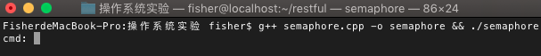
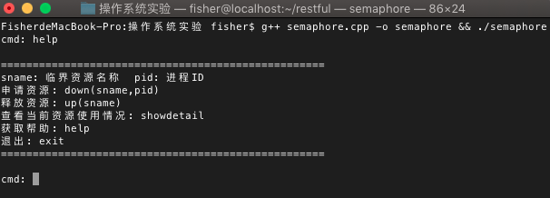
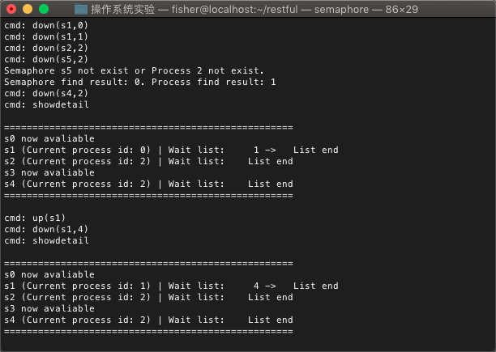

前言
操作系统系列博客的所有实验源自于课程"操作系统原理与实践检验"，代码是参考老师给的"软件工程专业操作系统实验指导书"文档后的改进版本。操作系统是计算机系统的核心，因此了解操作系统的设计和实现思路是必不可少的。了解操作系统的基本要求是：理解进程的概念，理解死锁，掌握银行家算法；掌握页式储存管理的实现原理以及页面置换法
实验目的
- 理解信号量相关理论
- 掌握记录型信号量结构
- 掌握 P、V 原语实现机制
实验内容
本实验针对操作系统中信号量的相关理论进行实验，要求实验者输入实验指导书提供的代码并进行测试。代码主要模拟信号量的P（down）、V（up）操作
信号量
信号量也称为信号锁，主要应用于进程间的同步和互斥，在用于互斥时，信号量通常作为资源锁。信号量通过两个原子操作P（down）和V（up）来访问。down操作使信号量的值-1，up操作使信号量的值+1
记录型信号量
记录型信号量采用了“让权等待”的策略，当存在多个资源访问同一个临界资源的情况时，记录型信号量可以使用一个等待链来存放等待使用资源的进程。在本次实验中，我们使用的是记录型信号量
实验过程
- 对于P（down）操作。首先我们需要判断申请的临界资源是否存在。若该资源存在，接下来我们要判断该资源是否被其他进程使用中。如果其他进程使用中，我们将申请使用该资源的进程添加到等待链表中，并且信号量-1。如果没有其他进程使用中，则信号量-1，并将该资源标识为该进程使用中
- 对于V（up）操作。首先我们需要判断释放的临界资源是否存在。若该资源存在，接下来我们可以释放该资源，并查看等待链表中是否有正在等待使用资源的进程。如果没有等待使用资源的进程，则该资源的信号量+1，如果有等待使用资源的进程，我们将其从等待链表移入到正在使用的列表中，同时信号量+1
代码汇总
basicpcb.h已经定义了关于信号量的结构体，我们只需要创建semaphore.cpp，并实现P、V操作
P操作
1 | // 申请资源 -> P操作 |
V操作
1 | // 释放资源 -> V操作 |
其他完善程序的函数
我们需要完善showdetail()，help()，init()，terminal()函数来让整个程序跑起来
1 | // 在程序的最开始定义宏 |
实验测试
编译并运行程序
g++ semaphore.cpp -o semaphore && ./semaphore
使用
help命令查看帮助
使用
down命令申请资源，使用up命令释放资源，使用showdetail查看资源使用情况
从上图中可以看到，我们申请了临界资源，程序会判断临界资源和进程是否同时存在，再进行P操作，释放资源也是如此。但是我们的程序有一个缺点，就是PV操作必须要成对地进行，而且一个进程不能多次申请同一个临界资源，因为我们没有对其进行限制。这是程序不完美的地方
总结
在本次的实验中，我们模拟进行了进程的P、V操作。PV操作解决了临界资源的分配问题，进程可以通过一个等待列表来先后使用需要的资源，但是PV操作存在一个问题就是：如果A进程占用了1号资源，需要再申请占用2号资源才能运行；而B进程占用了2号资源，需要再申请占用1号资源才能运行。这就造成了死锁的问题，对于该问题的解决方案，人们提出了“银行家算法”，在计算进程申请资源后是否会造成死锁问题后，选择不会形成死锁的解决方案来分配进程，破坏进程死锁产生的条件。该算法虽然会影响系统的性能，但与死锁造成的资源浪费、产生死锁后再解决问题相比，“银行家算法”显然是一个比较好的解决方案
课后思考
如何修改
down操作，使之能一次申请多个信号量？将
down函数的信号量参数改为一个信号量数组之后，进程能一次申请多个信号量。这会同时带来进程的死锁问题，为了避免该问题，其中一个解决方案：将信号量的申请改为&&关系，即该进程的一次申请中，所有要申请的临界资源都能使用，才能正式分配资源在某个时刻，一个进程最多可以等待多少个信号量？
从理论上来说，一个进程最多可以等待很多个信号量。但是如果等待的信号量越多，产生死锁的可能性就越来越大，为了避免死锁的产生，进程最好是不需要等待信号量，或者在可控范围下等待信号量